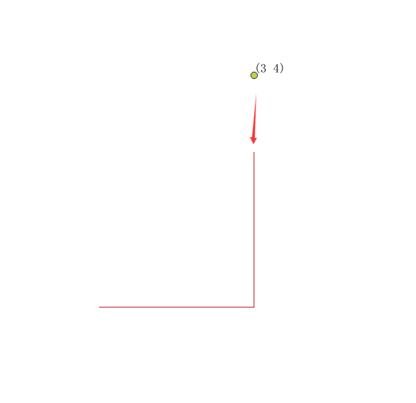
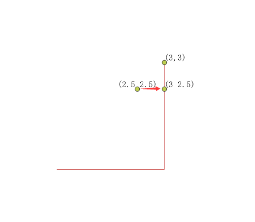
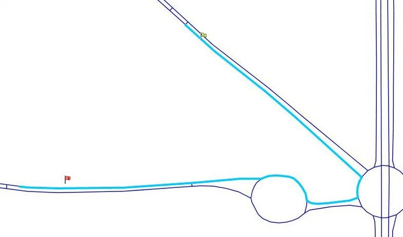
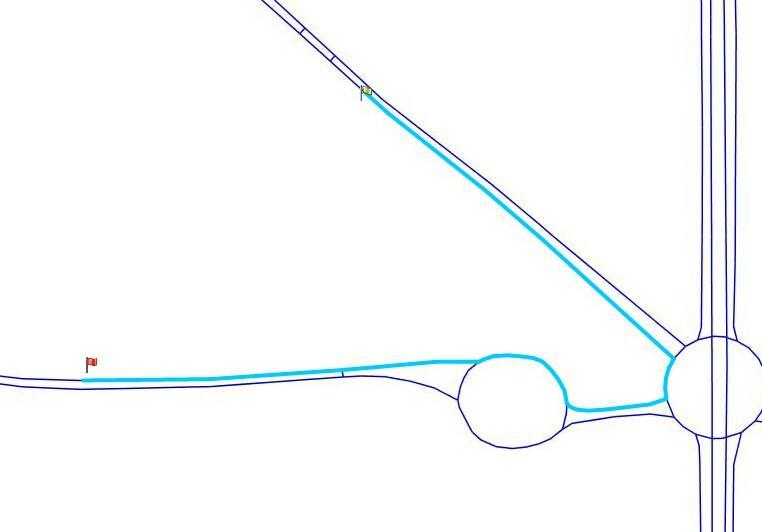
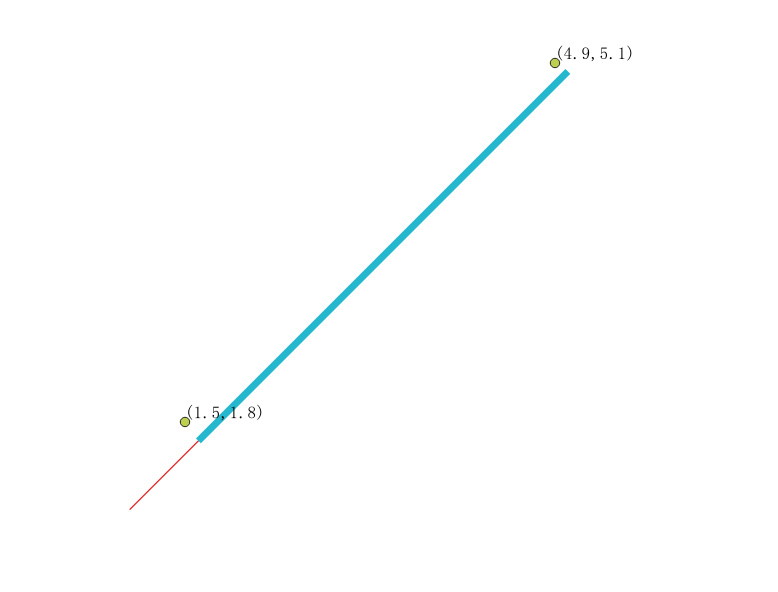

ST_LineLocatePoint
方法功能描述
已知一条线和某个点，该点可在线上，也可以不在线上，当点不在线上时，实际上是先从线上计算出与该点最近的点，然后计算位于线上这个点位于线上的[0,1]之间的一个百分比。
函数定义
float8 ST_LineLocatePoint(geometry a_linestring, geometry a_point);
参数定义：
a_linestring：一条线，LineString及其扩展类型LineStringZ，LineStringM或者LineStringZM，但是不重要，zm都不会参与计算。
a_point：一个已知点。
使用限制：该函数只适用二维，根本不会考虑三维情况。
应用示例
点在线上常规操作：
select ST_LineLocatePoint(st_geomfromtext('LineString(1 1,3 1,3 3)'), st_geomfromtext('Point(3 1)'));
st_lineLocatepoint
------------------
0.5
带z值：
select ST_LineLocatePoint(st_geomfromtext('LineStringZ(1 1 6,3 1 3,3 3 8)'), st_geomfromtext('PointZ(3 1 5)'));
st_lineLocatepoint
------------------
0.5
带m值：
select ST_LineLocatePoint(st_geomfromtext('LineStringM(1 1 6,3 1 3,3 3 8)'), st_geomfromtext('PointM(3 1 5)'));
st_lineLocatepoint
------------------
0.5
带zm值：
select ST_LineLocatePoint(st_geomfromtext('LineStringZM(1 1 6 5,3 1 3 4,3 3 8 5)'), st_geomfromtext('PointZM(3 1 5 5)'));
st_lineLocatepoint
------------------
0.5
点不在线上： 
select ST_LineLocatePoint(st_geomfromtext('LineString(1 1,3 1,3 3)'), st_geomfromtext('Point(3 4)'));
st_lineLocatepoint
------------------
1

select ST_LineLocatePoint(st_geomfromtext('LineString(1 1,3 1,3 3)'), st_geomfromtext('Point(2.5 2.5)'));
st_lineLocatepoint
------------------
0.875
结论：符合使用限制说明，仅仅用于二维，zm值对计算结果无影响。点不在线上时，实际等同于先根据ST_ClosestPoint函数计算该点对应线上的一个最近点，然后使用最近点计算其在线上的百分比。
典型应用场景
单独使用这个函数比较少，都是结合其他函数一起使用。比如在路径分析中，有起点终点，得到一个完整的路径，路径是由路段拼接的，而起点终点不一定就在路段上，首尾就会有时长一部分有时短一截，显示效果比较差，如下图： 
通过ST_LineLocatePoint计算出起点终点在路径上的百分比，然后调用ST_SubString函数根据百分截取一个子路段，可以优化这样的效果，如下图： 
sql示例：

do language plpgsql $$
DECLARE
line geometry; --路径
start geometry; --起点
end geometry; --终点
startfraction float;
endfraction float;
route_path geometry; --最终路径结果
BEGIN
line=ST_GeomFromText('LineString(1 1,5 5)');
start:=ST_MakePoint(1.5,1.8);
end:=ST_MakePoint(4.9,5.1);
startfraction:=ST_LineLocatePoint(line,start);
endfraction:=ST_LineLocatePoint(line,end);
route_path:=ST_LineSubstring(line,startfraction,endfraction);
raise notice '%',st_astext(route_path);
end;
$$;